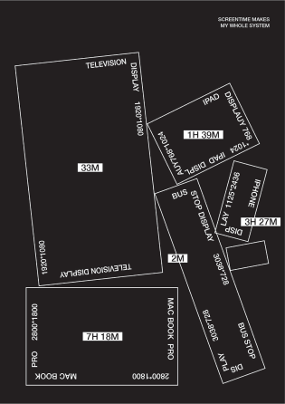
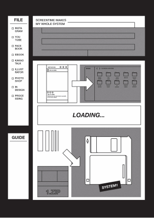
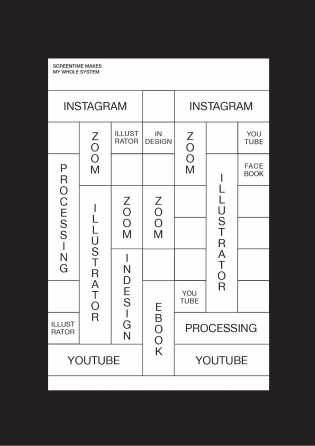
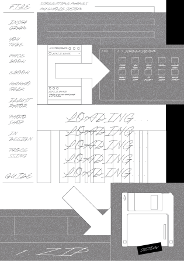
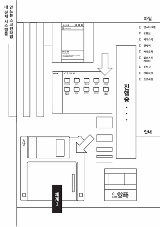
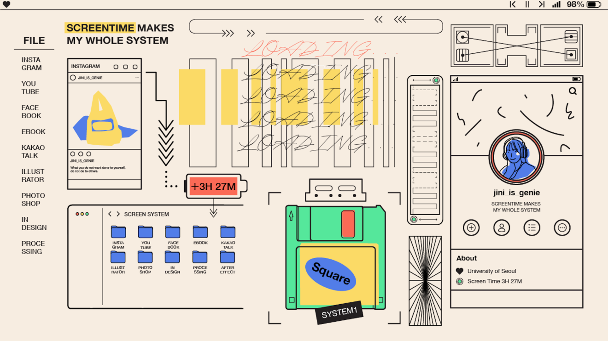

Project
Contact
@hiikariihii
Designer
Shape Research
강지은
SCREENTIME
Category
Shape Poster1 / Shape Poster2 / Shape Poster3
하루 대부분의 시간은 사각형 매체를 통해 활용, 소유된다. 사각형 매체가 나를 이루는 하나의
시스템임을 보여주는
포스터 연작을 제작했다.
SQUARE IN TIMETABLE
KARL GESTNER’S SQUARE
SCREENTIME MAKES MY WHOLE SYSTEM
Poster
Poster
Moving Poster
하루 대부분의 시간은 사각형 매체를 통해 활용, 소유된다. 사각형 매체가 나를 이루는 하나의 시스템임을 보여주는 포스터 연작을 제작했다.
Karl Gestner의 변주 시스템을 적용해 그리드, 서체, 배치를 변화시킨 3장의 스크린타임 포스터를 만들었다.
인스타그램을 3시간 27분 했다. 이 기록은 폴더로 내 몸속에 저장되고 유튜브, 에프터 이펙트 등 사각형 스크린으로 했던 활동은 쌓여 하나의 네모난 디스켓이 된다.
그리고는 '나'를 보여주는 타임라인에 기록된다. 나는 사각형 시스템으로 이루어졌다.





